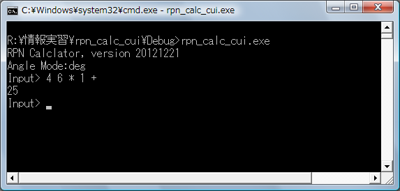
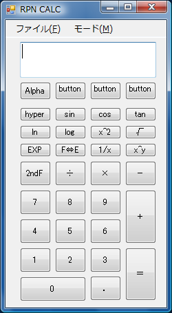
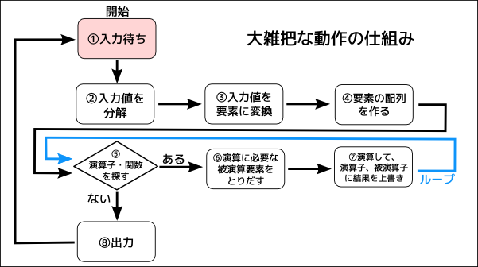

逆ポーランド関数電卓ソフト
靄谷 秋翠
はじめに

今回は、関数電卓ソフトを制作しました。関数電卓は、logやsinなどの数学関数を計算できる計算機です。 コンピュータで数学の数式を計算できるように設計しました。
今回は入力方式に逆ポーランド記法を採用しています。米国のヒューレットパッカード社の一部の製品が採用している入力方式です。
日本ではあまり普及していない方式なので、日本では見かけることがないかもしれません。
この関数電卓では、本物の逆ポーランド電卓とは違い、一行で入力する方式を採っています。

当初は、GUIの実装やさらに一般的な中置記法に対応し、 演算機能をライブラリ化した関数電卓の構想を持っていましたが、 今までに実装できたのは、演算機能とCUIの実装だけでした。 このページでは、関数電卓のCUI版を紹介したいと思います。
特徴
逆ポーランド記法
逆ポーランド記法は、数式を表わす方法の一種です。私たちは普段、数式を中置記法で表しています。
4 * 6 + 1
このように、中置記法では、演算子（＋、－、×、÷など）を数と数の間に置くことで、それらの数を足したり、引いたりするという計算を表しています。
これに対し、ポーランド記法では、計算されるの後に演算子を置くことで、計算を表現します。
次の式は、先ほどの4 * 6 + 1を逆ポーランド記法で表したものです。
4 6 * 1 +
「4と6をかけたものに、1を足す」と表現すればわかりやすいでしょうか。
赤文字で強調したところの順番と、式の順番が同じになっているのがわかりますか？
このように、逆ポーランド記法では、演算子は前の要素に対して計算を行います。
対話式入力
この関数電卓は、コンソール上で動作します。その特性上、対話式入力を採用しました（他の方式がしんどいだけです）。 ちょうど当ページ上部の画像のようにユーザーが式を入力すると、コンピューターが式を計算し、答えてくれます。
大きな数に対応
整数型は、intよりも大きいlong型を採用しています。浮動小数点型は、doubleを採用しています。
使い方
演算子・関数一覧
| 演算子・関数 | 被演算子数 | 説明 | 使用例 |
|---|---|---|---|
| + | 2 | 加算（足し算） OP1+OP2 |
OP1 OP2 + |
| - | 2 | 減算（引き算） OP1-OP2 |
OP1 OP2 - |
| * | 2 | 乗算（かけ算） OP1*OP2 |
OP1 OP2 * |
| / | 2 | 除算（わり算） OP1/OP2 |
OP1 OP2 / |
| mod | 2 | 余剰 OP1をOP2でわったときのあまりを求めますOP1 MOD OP2 |
OP1 OP2 mod |
| abs | 1 | 絶対値を求めます。|OP1| |
OP1 abs |
| pm | 1 | +/-の符号を反転させます。 | OP1 pm |
| 1/x,inv | 1 | 逆数を求めます。 | OP1 1/x,OP1 inv |
| pow | 2 | べき乗を計算します。OP1のOP2乗を求めます。 | OP1 OP2 pow |
| ^2 | 1 | OP1の平方（2乗）を求めます。 | 2 ^2 |
| ^3 | 1 | OP1の立方（3乗）を求めます。 | 2 ^3 |
| sqrt | 1 | OP1の平方根を求めます。 | OP1 sqrt |
| cbrt | 1 | OP1の立方根を求めます。 | OP1 cbrt |
| lg | 1 | OP1の常用対数を求めます。log_10 (OP1) |
OP1 lg |
| ln | 1 | OP1の自然対数を求めます。log_e (OP1) |
OP1 ln |
| log | 2 | OP1を底とするOP2の対数を求めます。log_OP1 (OP2) |
OP1 OP2 log |
| sin | 1 | 角度OP1の正接（サイン）を求めます。sin(OP1) |
OP1 sin |
| cos | 1 | 角度OP1の余弦（コサイン）を求めます。cos(OP1) |
OP1 cos |
| tan | 1 | 角度OP1の正接（タンジェント）を求めます。tan(OP1) |
OP1 tan |
仕組み
このプログラムの仕組みを少し説明しようと思います。 下の図をご覧ください。

入力された式が正しいときの処理の流れです。
- 入力を待ちます。Input> と表示されている状態です。
- 入力された文字列をスペースごとに分解します。
- 分解されたそれぞれの値を「要素」として扱うようにします。この時、それぞれの値が数なのか、演算子なのか判断します。
- 要素を並べた配列を作ります。
- 要素の配列から、最初から順番に、演算子・関数である要素を探していきます。なければ、8に移ります。
- 演算子・関数の演算に必要な要素を取り出してきます。
- 演算し、その結果で演算子・被演算子を上書きします。5に戻ります。
- 画面などに出力します。
実際の計算の様子です。
Input> 4 6 * 1 +入力値が入力されます。["4","6","*","1","+"]それぞれの値をスペースごとに分解します。[4,整数][6,整数][*,演算子][1,整数][+,演算子]それぞれを「要素」として扱います。[ [4,整数],[6,整数],[*,演算子],[1,整数],[+,演算子] ]要素の配列を作ります。[ [4,整数],[6,整数],[*,演算子],[1,整数],[+,演算子] ]演算子・関数を見つけます。[ [4,整数],[6,整数],[*,演算子] ]演算に必要な要素を取り出します。4 * 6を計算し、配列の[4,整数],[6,整数],[*,演算子]があった部分を計算結果の[24,整数]で上書きします。[ [24,整数],[1,整数],[+,演算子] ]演算子・関数を見つけます。[ [24,整数],[1,整数],[+,演算子] ]演算に必要な要素を取り出します。24 + 1を計算し、配列の[24,整数],[1,整数],[+,演算子]があった部分を計算結果の[25,整数]で上書きします。[ [25,整数] ]演算子・関数はみつかりません。25出力します。
謝辞
C++の基礎を小林健一郎さんのサイトC++入門で勉強しました。